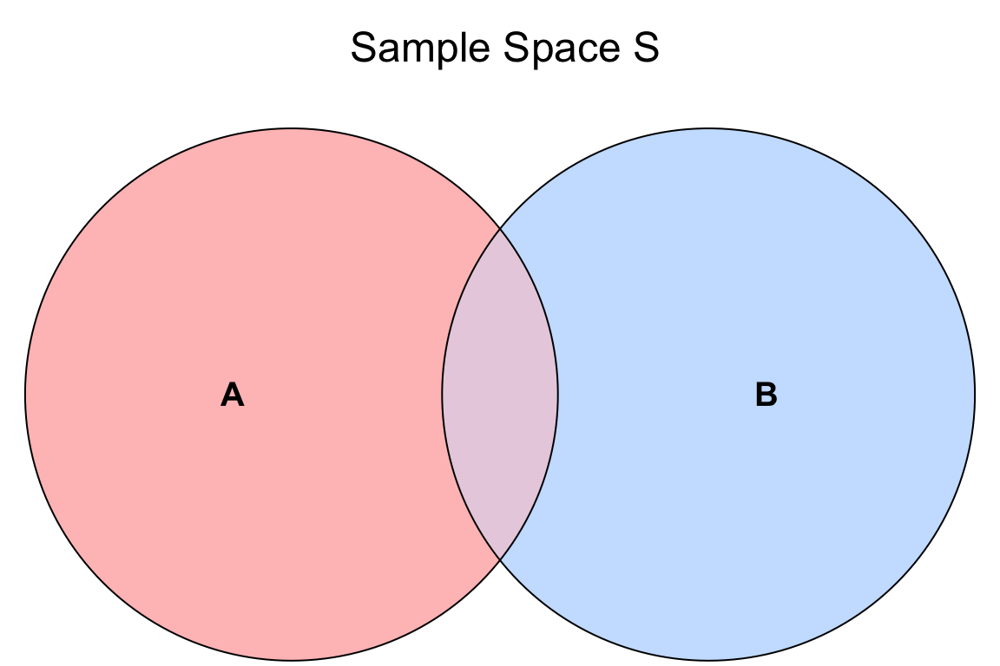
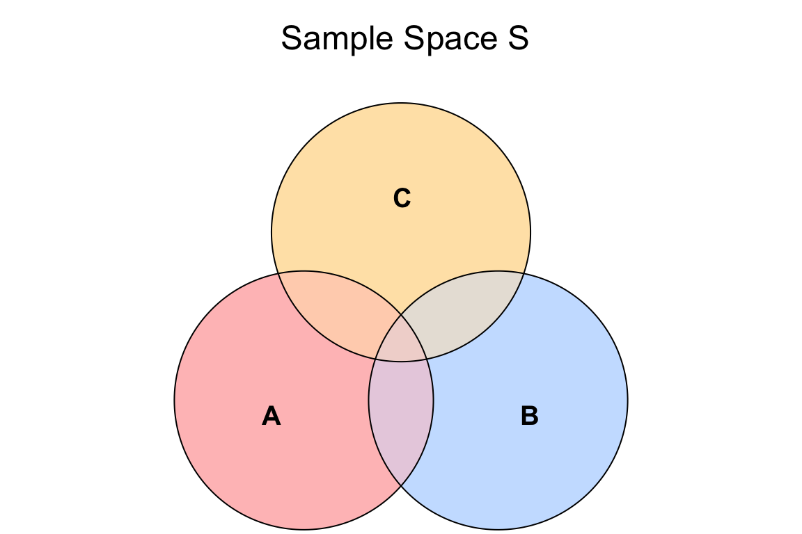
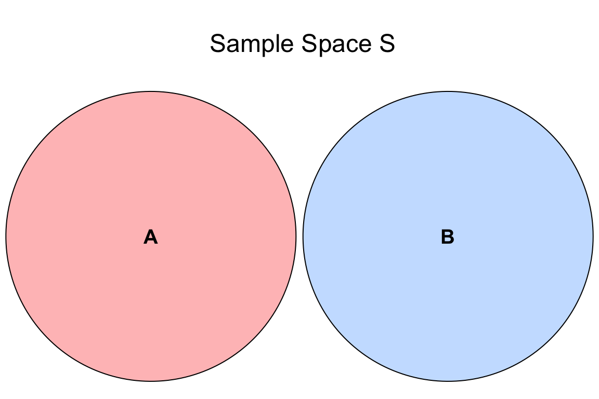

Probability Cheatsheet
1 Complement of an Event
In general, for a given event \(A\), the complement is the subset of other outcomes that do not belong to event \(A\):
\[1 = P(A) + P(A^c),\]
where \(^c\) means the complement (we read it as “not”).
2 Conditional Independence
Random variables \(X\) and \(Y\) are conditionally independent given random variable \(Z\) if and only if
\[P(X = x \cap Y = y \mid Z = z) = P(X = x \mid Z = z) \cdot P(Y = y \mid Z = z).\]
3 Conditional Probability
In general, let \(A\) and \(B\) be two events of interest within the sample \(S\), and \(P(B) > 0\), then the conditional probability of \(A\) given \(B\) is defined as:
\[P(A \mid B) = \frac{P(A \cap B)}{P(B)}\]
Note event \(B\) is becoming the new sample space (i.e., \(P(B \mid B) = 1\)). The tweak here is that our original sample space \(S\) has been updated to \(B\).
4 Covariance
Let \(X\) and \(Y\) be two numeric random variables; their covariance is defined as follows:
\[\operatorname{Cov}(X, Y) = \mathbb{E}[(X-\mu_X)(Y-\mu_Y)],\]
where \(\mu_X = \mathbb{E}(X)\) and \(\mu_Y = \mathbb{E}(Y)\) are the respective means (or expected values) of \(X\) and \(Y\). After some algebraic and expected value manipulations, the above equation reduces to a more practical form to work with:
\[\operatorname{Cov}(X,Y) = \mathbb{E}(XY) - \left[ \mathbb{E}(X)\mathbb{E}(Y) \right],\]
where \(\mathbb{E}(XY)\) is the mean (or expected value) of the multiplication of the random variables \(X\) and \(Y\).
5 Cumulative Distribution Function
Let \(X\) be a continuous random variable with probability density function (PDF) \(f_X(x)\). The cumulative distribution function (CDF) is usually denoted by \(F(\cdot)\) and is defined as
\[F_X(x) = P(X \leq x).\]
We can calculate the CDF by
\[F_X(x) = \int_{-\infty}^x f_X(t) \, \text{d}t.\]
In order for \(F_X(x)\) to be a valid CDF, the function needs to satisfy the following requirements:
- Must never decrease.
- It must never evalute to be \(< 0\) or \(> 1\).
- \(F_X(x) \rightarrow 0\) as \(x \rightarrow -\infty\)
- \(F_X(x) \rightarrow 1\) as \(x \rightarrow \infty\).
6 Entropy
Let \(X\) be a random variable:
- If \(X\) is discrete, with \(P(X = x)\) as a probability mass function (PMF), then the entropy is defined as:
\[H(Y) = -\displaystyle \sum_x P(X = x)\log[P(X = x)].\]
- If \(X\) is continuous, with \(f_X(x)\) as a probability density function (PDF), then the entropy is defined as:
\[H(X) = -\int_x f_X(x) \log [f_X(x)] \text{d}x.\]
Note that, in Statistics, the \(\log(\cdot)\) notation implicates base \(e\).
7 Expected Value
Let \(X\) be a numeric random variable. The mean \(\mathbb{E}(X)\) (also known as expected value or expectation) is defined as:
- If \(X\) is discrete, with \(P(X = x)\) as a probability mass function (PMF), then
\[\mathbb{E}(X) = \displaystyle \sum_x x \cdot P(X = x).\]
- If \(X\) is continuous, with \(f_X(x)\) as a probability density function (PDF), then
\[\mathbb{E}(X) = \displaystyle \int_x x \cdot f_X(x) \text{d}x.\]
In general for a function of \(X\) such as \(g(X)\), the expected value is defined as:
- If \(X\) is discrete, with \(P(X = x)\) as a PMF, then
\[\mathbb{E}\left[ g(X) \right] = \displaystyle \sum_x g(X) \cdot P(X = x).\]
- If \(X\) is continuous, with \(f_X(x)\) as a PDF, then
\[\mathbb{E}\left[ g(X) \right] = \displaystyle \int_x g(X) \cdot f_X(x) \text{d}x.\]
8 Inclusion-Exclusion Principle
8.1 Two Events
Let \(A\) and \(B\) be two events of interest in the sample space \(S\). The probability of \(A\) or \(B\) occuring is denoted as \(P(A \cup B)\), where \(\cup\) means “OR.” The Inclusion-Exclusion Principle allows us to compute this probability as:
\[P(A \cup B) = P(A) + P(B) - P(A \cap B),\]
where \(P(A \cap B)\) denotes the probability of \(A\) and \(B\) occuring simultaneously (\(\cap\) means “AND”).
\(P(A \cup B)\) can be represented with the overall shaded area in the Venn diagram depicted in Figure 1.
8.2 Three Events
We can also extend this principle to three events (\(A,\) \(B\), and \(C\) in the sample space \(S\)):
\[ \begin{align*} P(A \cup B \cup C) &= P(A) + P(B) + P(C) - \\ & \qquad P(A \cap B) - P(B \cap C) - P(A \cap C) + \\ & \qquad \quad P(A \cap B \cap C), \end{align*} \]
where \(P(A \cap B \cap C)\) denotes the probability of \(A\), \(B\), and \(C\) occuring simultaneously.
\(P(A \cup B \cup C)\) can be represented with the overall shaded area in the Venn diagram depicted in Figure 2

9 Independent Events
Let \(A\) and \(B\) be two events of interest in the sample space \(S\). These two events are independent if the occurrence of one of them does not affect the probability of the other. In probability notation, their intersection is defined as:
\[P(A \cap B) = P(A) \cdot P(B).\]
10 Independence in Probability Distributions between Two Random Variables
Let \(X\) and \(Y\) be two independent random variables. Using their corresponding marginals, we can obtain their corresponding joint distributions as follows:
- \(X\) and \(Y\) are discrete. Let \(P(X = x, Y = y)\) be the joint probability mass function (PMF) with \(P(X = x)\) and \(P(Y = y)\) as their marginals. Then, we define the joint PMF as:
\[P(X = x, Y = y) = P(X = x) \cdot P(Y = y).\]
The term denoting a discrete joint PMF \(P(X = x, Y = y)\) is equivalent to the intersection of events \(P(X = x \cap Y = y)\).
- \(X\) and \(Y\) are continuous. Let \(f_{X,Y}(x,y)\) be the joint probability density function (PDF) with \(f_X(x)\) and \(f_Y(y)\) as their marginals. Then, we define the joint PDF as:
\[f_{X,Y}(x,y) = f_X(x) \cdot f_Y(y).\]
11 Independent Random Variables
Let \(X\) and \(Y\) be two random variables. We say \(X\) and \(Y\) are independent if knowing something about one of them tells us nothing about the other. A definition of \(X\) and \(Y\) being independent is the following:
\[P(X = x \cap Y = y) = P(X = x) \cdot P(Y = y).\]
12 Kendall’s \(\tau_K\)
Let \(X\) and \(Y\) be two numeric random variables. Kendall’s \(\tau_K\) measures concordance between each pair of observations \((x_i, y_i)\) and \((x_j, y_j)\) with \(i \neq j\):
Concordant, which gets a positive sign, means \[\begin{gather*} x_i < x_j \quad \text{and} \quad y_i < y_j, \\ \text{or} \\ x_i > x_j \quad \text{and} \quad y_i > y_j. \end{gather*}\]
Discordant, which gets a negative sign, means \[\begin{gather*} x_i < x_j \quad \text{and} \quad y_i > y_j, \\ \text{or} \\ x_i > x_j \quad \text{and} \quad y_i < y_j. \end{gather*}\]
Mathematically, we can set it up as:
\[\tau_K = \frac{\text{Number of concordant pairs} - \text{Number of discordant pairs}}{{n \choose 2}},\]
with the “true” Kendall’s \(\tau_K\) value obtained by sending \(n \rightarrow \infty\). Here, \(n\) is the sample size (i.e., the number of data points). Note that:
\[-1 \leq \tau_K \leq 1.\]
13 Law of Total Expectation
Let \(X\) and \(Y\) be two numeric random variables. Generally, a marginal mean \(\mathbb{E}_Y(Y)\) can be computed from the conditional means \(\mathbb{E}_Y(Y \mid X = x)\) and the probabilities of the conditioning variables \(P(X = x)\):
\[\mathbb{E}_Y(Y) = \sum_x \mathbb{E}_Y(Y \mid X = x) \cdot P(X = x).\]
Or, it can also be written as:
\[\mathbb{E}_Y(Y) = \mathbb{E}_X [\mathbb{E}_Y(Y \mid X)].\]
Also, the previous result extends to probabilities:
\[P(Y = y \cap X = x) = P(Y = y \mid X = x) \cdot P(X = x).\]
14 Linearity of Expectations
If \(a\) and \(b\) are constants, with \(X\) and \(Y\) as numeric random variables, then we can obtain the expected value of the following expressions as:
\[\begin{gather*} \mathbb{E}(a X) = a \mathbb{E}(X) \\ \mathbb{E}(X + Y) = \mathbb{E}(X) + \mathbb{E}(Y) \\ \mathbb{E}(aX + bY) = a\mathbb{E}(X) + b\mathbb{E}(Y). \end{gather*}\]
15 Linearity of Variances with Two Independent Random Variables
If \(a\) and \(b\) are constants, with \(X\) and \(Y\) as independent numeric random variables, then we can obtain the variance of the following expressions as:
\[\begin{gather*} \text{Var}(a X) = a^2 \text{Var}(X) \\ \text{Var}(X + Y) = \text{Var}(X) + \text{Var}(Y) \\ \text{Var}(aX + bY) = a^2 \text{Var}(X) + b^2 \text{Var}(Y). \end{gather*}\]
16 Marginal (Unconditional) Probability
In general, the probability of an event \(A\) occurring is denoted as \(P(A)\) and is defined as
\[P(A) = \frac{\text{Number of times event $A$ is observed}}{\text{Total number of events observed}}.\]
17 Median
Let \(X\) be a numeric random variable. The median \(\text{M}(X)\) is the outcome for which there is a 50-50 chance of seeing a greater or lesser value. So, its distribution-based definition satisfies
\[P[X \leq \text{M}(X)] = 0.5.\]
18 Mode
Let \(X\) be a random variable:
- If \(X\) is discrete, with \(P(X = x)\) as a probability mass function (PMF), then the mode is the outcome having the highest probability.
- If \(X\) is continuous, with \(f_X(x)\) as a probability density function (PDF), then the mode is the outcome having the highest density. That is:
\[\text{Mode} = {\arg \max}_x f_X(x).\]
19 Mutual Information
The mutual information between two random variables \(X\) and \(Y\) is defined as
\[H(X,Y) = \displaystyle \sum_x \displaystyle \sum_y P(X = x \cap Y = y)\log\left[\frac{P(X = x \cap Y = y)}{P(X = x) \cdot P(Y = y)}\right].\]
20 Mutually Exclusive (or Disjoint) Events
Let \(A\) and \(B\) be two events of interest in the sample space \(S\). These events are mutually exclusive (or disjoint) if they cannot happen at the same time in the sample space \(S\). Thus, in probability notation, their intersection will be:
\[P(A \cap B) = 0.\]
Therefore, by the Inclusion-Exclusion Principle, the union of these two events can be obtained as follows:
\[\begin{align*} P(A \cup B) &= P(A) + P(B) - \underbrace{P(A \cap B)}_{0} \\ &= P(A) + P(B). \end{align*}\]
These two events are shown in Venn diagram depicted in Figure 3.

21 Odds
Let \(p\) be the probability of an event of interest \(A\). The odds \(o\) is the ratio of the probability of the event \(A\) to the probability of the non-event \(A\):
\[o = \frac{p}{1 - p}.\]
In plain words, the odds will tell how many times event \(A\) is more likely compared to how unlikely it is.
22 Pearson’s Correlation
Let \(X\) and \(Y\) be two numeric random variables, whose respective variances are defined by the variance equation, with a covariance defined as above. Pearson’s correlation standardizes the distances according to the standard deviations \(\sigma_X\) and \(\sigma_Y\) of \(X\) and \(Y\), respectively. It is defined as:
\[\begin{align*} \rho_{XY} = \operatorname{Corr}(X, Y) &= \mathbb{E} \left[ \left(\frac{X-\mu_X}{\sigma_X}\right) \left(\frac{Y-\mu_Y}{\sigma_Y}\right) \right] \\ &= \frac{\operatorname{Cov}(X, Y)}{\sqrt{\operatorname{Var}(X)\operatorname{Var}(Y)}}. \end{align*}\]
As a result of the above equation, it turns out that
\[-1 \leq \rho_{XY} \leq 1.\]
23 Probability of a Continuous Random Varible \(X\) Being between \(a\) and \(b\)
For a continuous random variable \(X\) with probability density function (PDF) \(f_X(x)\), the probability of \(X\) being between \(a\) and \(b\) is
\[P(a \leq X \leq b) = \int_a^b f_X(x)\text{d}x.\]
We can connect the dots with our new definition of a cumulative distribution function (CDF). First,
\[P(a \leq X \leq b) = P(X \leq b) - P(X \leq a)\]
because if \(X \leq b\) but not \(\leq a\) then it must be that \(a \leq X \leq b\). But now we can write these two terms using the CDF:
\[P(a \leq X \leq b) = P(X \leq b) - P(X \leq a) = F_X(b) - F_X(a).\]
Now, plugging in the definition of the CDF as the integral of the PDF,
\[P(a \leq X \leq b) = \int_{-\infty}^b f_X(x) \, \text{d}x - \int_{-\infty}^a f_X(x) \, \text{d}x=\int_{a}^b f_X(x) \, \text{d}x.\]
24 Properties of the Bivariate Gaussian or Normal Distribution
Let \(X\) and \(Y\) be part of a bivariate Gaussian or Normal distribution with means \(-\infty < \mu_X < \infty\) and \(-\infty < \mu_Y < \infty\), variances \(\sigma^2_X > 0\) and \(\sigma^2_Y > 0\), and correlation coefficient \(-1 \leq \rho_{XY} \leq 1\).
This bivariate Gaussian or Normal distribution has the following properties:
Marginal distributions are Gaussian. The marginal distribution of a subset of variables can be obtained by just taking the relevant subset of means, and the relevant subset of the covariance matrix.
Linear combinations are Gaussian. This is actually by definition. If \((X, Y)\) have a bivariate Gaussian or Normal distribution with marginal means \(\mu_X\) and \(\mu_Y\) along with marginal variances \(\sigma^2_X\) and \(\sigma^2_Y\) and covariance \(\sigma_{XY}\); then \(Z = aX + bY + c\) with constants \(a, b, c\) is Gaussian. If we want to find the mean and variance of \(Z\), we apply the linearity of expectations and variance rules:
\[ \begin{align*} \mathbb{E}(Z) &= \mathbb{E}(aX + bY + c) \\ &= \mathbb{E}(aX) + \mathbb{E}(bY) + \mathbb{E}(c) \\ &= a \mathbb{E}(X) + b \mathbb{E}(Y) + c \\ &= a \mu_X + b \mu_Y + c \\ \\ \text{Var}(Z) &= \text{Var}(aX + bY + c) \\ &= \text{Var}(aX) + \text{Var}(bY) + \text{Var}(c) + 2 \text{Cov}(aX, bY) \\ &= a^2 \text{Var}(X) + b^2 \text{Var}(Y) + 0 + 2ab \text{Cov}(X, Y) \\ &= a^2 \sigma_X^2 + b^2 \sigma_Y^2 + 2ab \sigma_{XY}. \end{align*} \]
- Conditional distributions are Gaussian. If \((X, Y)\) have a bivariate Gaussian or Normal distribution with marginal means \(\mu_X\) and \(\mu_Y\) along with marginal variances \(\sigma^2_X\) and \(\sigma^2_Y\) and covariance \(\sigma_{XY}\); then the distribution of \(Y\) given that \(X = x\) is also Gaussian. Its distribution is
\[Y \mid X = x \sim \mathcal{N} \left(\mu_{_{Y \mid X = x}} = \mu_Y + \frac{\sigma_Y}{\sigma_X} \rho_{XY} (x - \mu_X), \sigma^2_{_{Y \mid X = x}} = \ (1 - \rho_{XY}^2)\sigma_Y^2 \right).\]
25 Quantile
Let \(X\) be a numeric random variable. A \(p\)-quantile \(Q(p)\) is the outcome with a probability \(p\) of getting a smaller outcome. So, its distribution-based definition satisfies
\[P[X \leq Q(p)] = p.\]
26 Quantile Function
Let \(X\) be a continuous random variable. The quantile function \(Q(\cdot)\) takes a probability \(p\) and maps it to the \(p\)-quantile. It turns out that this is the inverse of the cumulative distribution function (CDF):
\[Q(p) = F^{-1}(p).\]
Note that this function does not exist outside of \(0 \leq p \leq 1\). This is unlike the other functions (density, CDF, and survival function) which exist on all real numbers.
27 Skewness
Let \(X\) be a numeric random variable:
- If \(X\) is discrete, with \(P(X = x)\) as a probability mass function (PMF), then skewness can be defined as
\[\text{Skewness}(X) = \mathbb{E} \left[ \left( \frac{X - \mu_X}{\sigma_X} \right)^3 \right] = \displaystyle \sum_x \left( \frac{x - \mu_X}{\sigma_X} \right)^3 \cdot P(X = x).\]
- If \(X\) is continuous, with \(f_X(x)\) as a probability density function (PDF), then
\[\text{Skewness}(X) = \mathbb{E} \left[ \left( \frac{X - \mu_X}{\sigma_X} \right)^3 \right] = \displaystyle \int_x \left( \frac{x - \mu_X}{\sigma_X} \right)^3 \cdot f_X(x) \text{d}x.\]
where \(\mu_X = \mathbb{E}(X)\) and \(\sigma_X = \text{SD}(X)\).
28 Survival Function
Let \(X\) be a continuous random variable. The survival function \(S(\cdot)\) is the cumulative distribution function (CDF) “flipped upside down”. For this random variable \(X\), the survival function is defined as
\[S_X(x) = P(X > x) = 1 - F_X(x).\]
29 Variance
Let \(X\) be a numeric random variable. The variance, either for a discrete or continuous random variable, is defined as
\[ \begin{align*} \text{Var}(X) &= \mathbb{E}\{[X - \mathbb{E}(X)]^2\}\\ &= \mathbb{E}(X^2) - [\mathbb{E}(X)]^2. \end{align*} \]
For the continuous case with \(f_X(x)\) as a probability density function (PDF), an alternative definition of the variance is
\[\text{Var}(X) = \mathbb{E}[(X - \mu_X)^2] = \int_x (x - \mu_X) ^ 2 \, f_X(x) \text{d}x.\]
The term \(\mu_X\) is equal to \(\mathbb{E}(X)\) from the expected value equation.
Finally, either for a discrete or continuous random variable, the standard deviation is the square root of the variance:
\[\text{SD}\left[ \text{Var}(X) \right] = \sqrt{\text{Var}(X)}.\]
The above measure is more practical because it is on the same scale as the outcome, unlike the variance.
30 Variance of a Sum Involving Two Non-Independent Random Variables
Suppose \(X\) and \(Y\) are not independent numeric random variables. Therefore, the variance of their sum is:
\[\operatorname{Var}(X + Y) = \operatorname{Var}(X) + \operatorname{Var}(Y) + 2\operatorname{Cov}(X, Y).\]
Furthermore, if \(X\) and \(Y\) are independent, then
\[\mathbb{E}(XY) = \mathbb{E}(X) \mathbb{E}(Y).\]
Therefore, using the above equation, the sum becomes:
\[\operatorname{Var}(X + Y) = \operatorname{Var}(X) + \operatorname{Var}(Y).\]